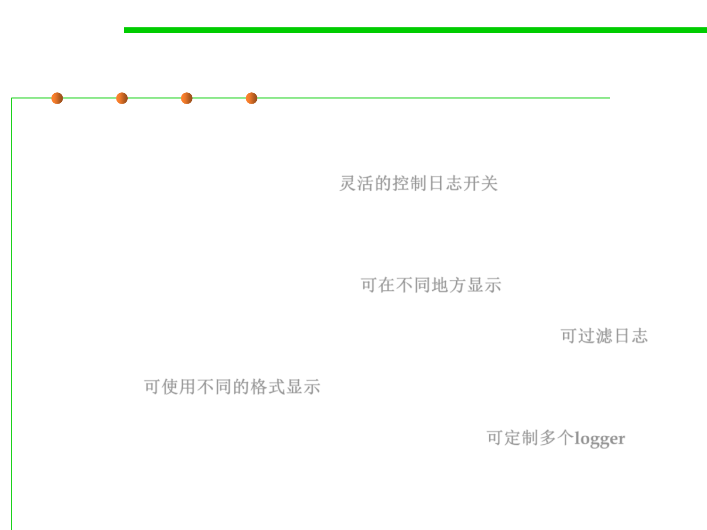

java.util.logging
7.4 Debugging
▪ java.util.logging API:
– It is easy to suppress all log records or just those below a certain level, and
just as easy to turn them back on. 灵活的控制日志开关
– Suppressed logs are very cheap, so that there is only a minimal penalty for
leaving the logging code in your application.
– Log records can be directed to different handlers—for displaying in the
console, writing to a file, and so on. 可在不同地方显示（console,file, …)
– Both loggers and handlers can filter records. Filters can discard boring log
entries, using any criteria supplied by the filter implementor. 可过滤日志
– Log records can be formatted in different ways—for example, in plain text
or XML. 可使用不同的格式显示
– Applications can use multiple loggers, with hierarchical names such as
com.mycompany.myapp, similar to package names. 可定制多个logger
– By default, the logging configuration is controlled by a configuration file.
– Applications can replace this mechanism if desired.